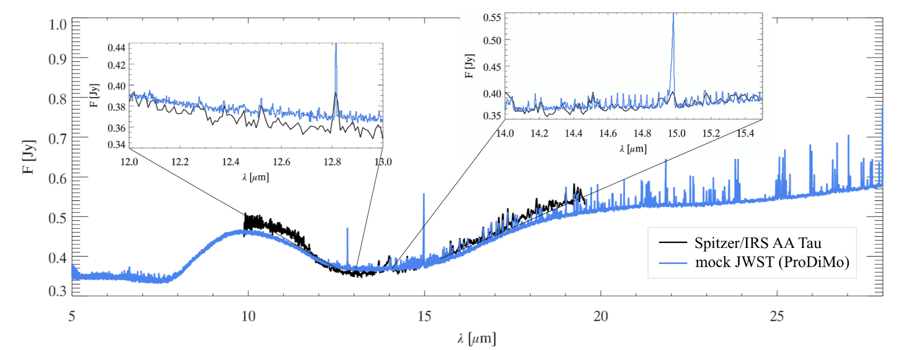

FU Orionis objects (FUors) are young stars that experience dramatic increases in brightness due to sudden episodes of high-mass accretion from their surrounding disks. This research focuses on studying the molecular content, including organic molecules, in these environments and how it is affected by these events.
Using the James Webb Space Telescope(JWST), we study how accretion episodes affect the inner regions of protoplanetary disks, particularly around the snow line where increased temperatures lead to the sublimation of material. Its wavelength coverage from ~4.8 to 28 microns enables the detection of molecular and atomic emission and absorption features, allowing us to trace the chemical composition of these regions.
